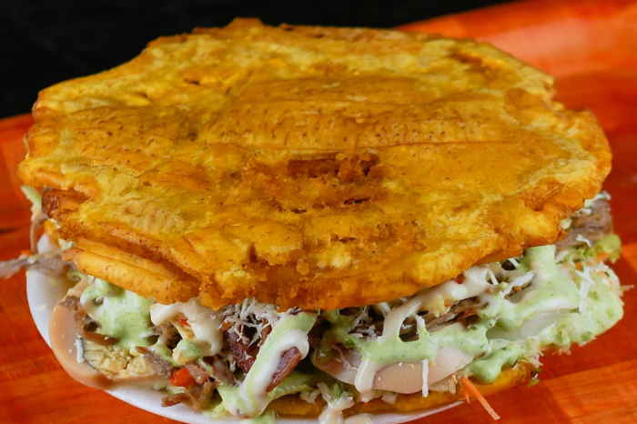

Patacon Zuliano

The patacon zuliano starts with a base made of green or ripe plantain, flattened and fried, which is filled with any type of protein and a series of vegetables, and is topped with another plantain tapa.
Ingredients
- 4 green bananas
- 1 chicken breast fillets (1/2 kilo)
- 2 white onions
- 3 tomatoes
- 1 sprig of coriander
- 100 grams of lettuce
- ¼ kilo of white cheese, thinly sliced
- Mayonnaise and ketchup to taste
- Mustard to taste
- ½ liter of vegetable oil
- Salt and pepper to taste
Steps
- The first thing to do is to prepare and fry the plantains. Start by peeling the plantains, then cut each one into two equal parts diagonally.
- Next, heat a frying pan with plenty of oil. Once the temperature has risen, submerge the plantains and let them fry for 10 minutes over medium heat. Remove them and eliminate the excess oil.
- Immediately place a piece of banana on a board and flatten it with the help of a lid or plate. Do the same with the other pieces. Then, fry the resulting plantain slices again until they are golden brown.
- In parallel to the cooking process of the tostones, cook the chicken. To do this, season the chicken fillets with salt and pepper and place them in a hot frying pan to sear. Once cooked on both sides, remove, cut into strips and set aside.
- Next, mince the tomato, onion, cilantro and a pinch of salt and pepper.
- Arrange a tostón on a plate and place the chicken strips on top, then the tomato and onion mixture, lettuce, cheese and the sauces of your choice. Cover with another tostón and it is ready to serve.